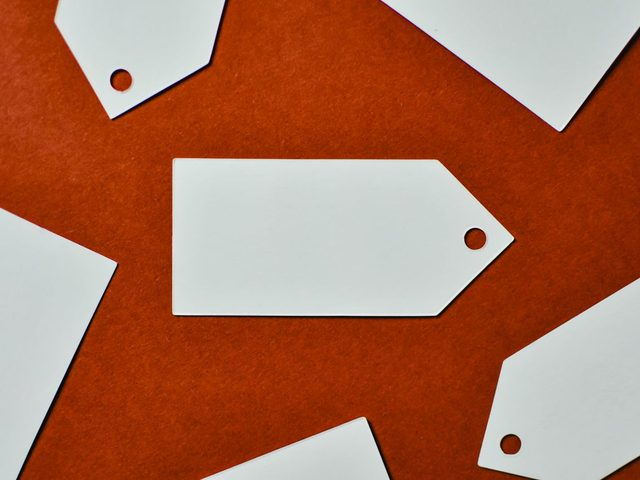
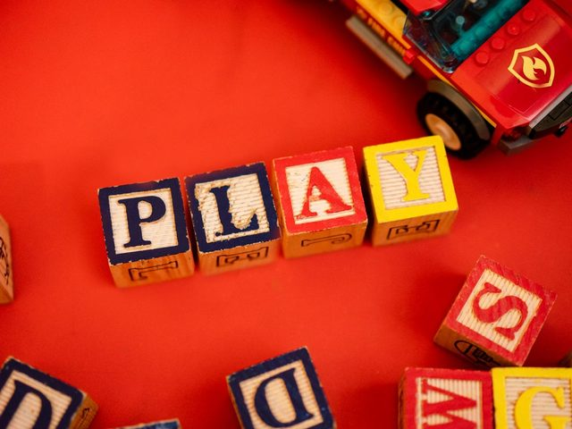
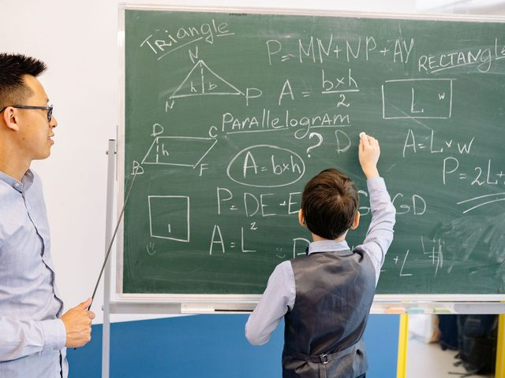
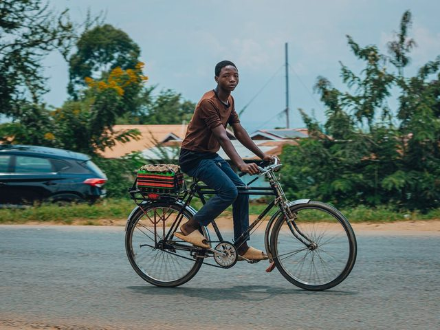
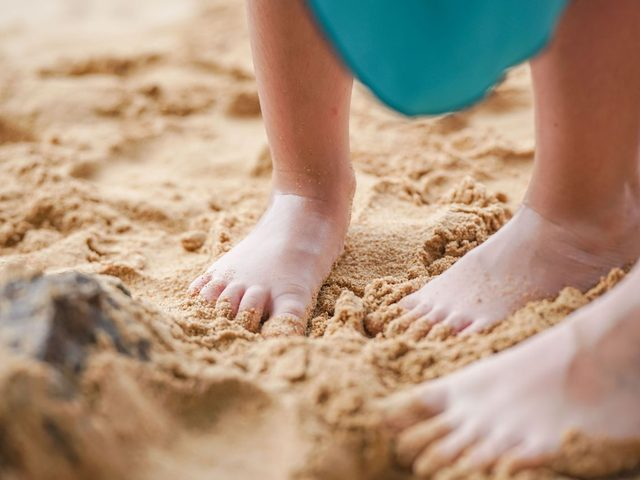
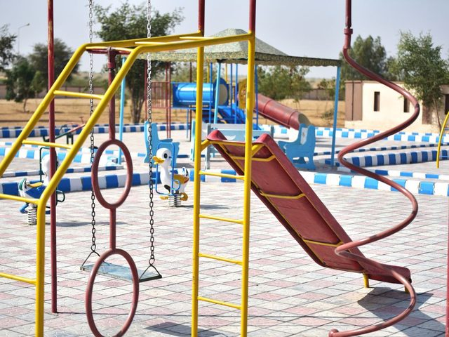
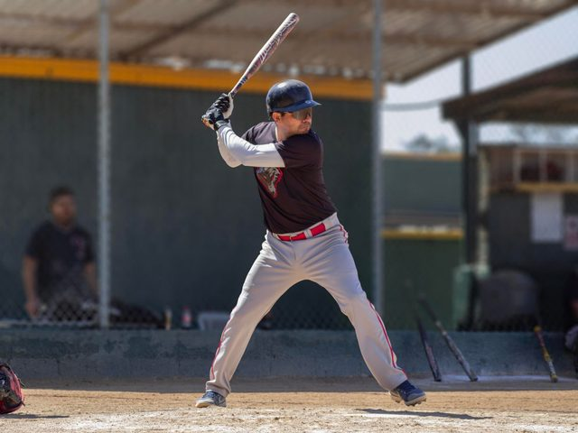
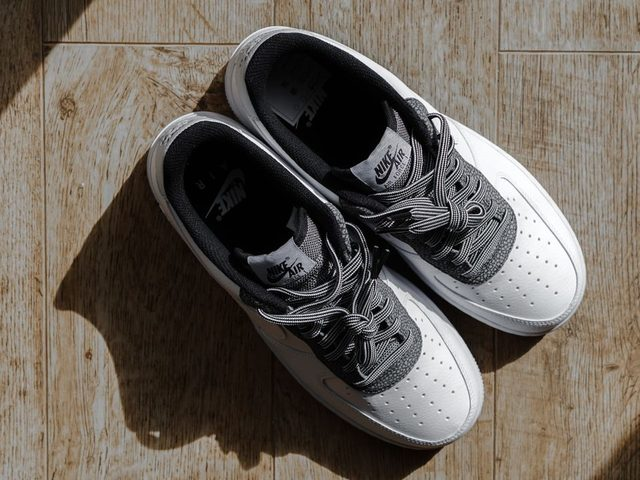
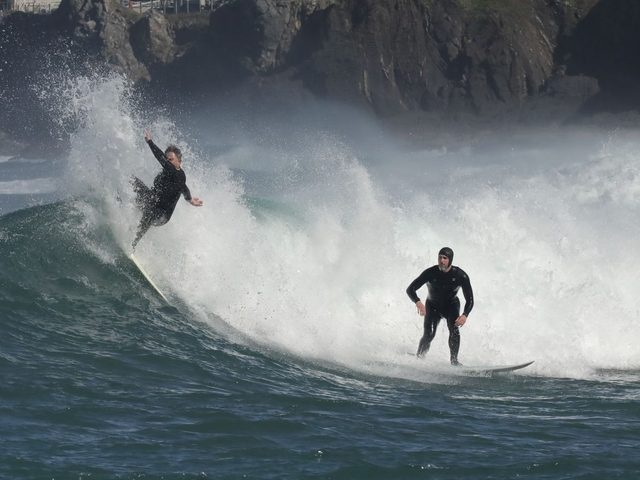

LALA WORD · UNIT 9
一字多義（九）
A New Way to Get Food Fast
23 個單字一字多義
本單元單字一覽
fly 是飛，也是「蒼蠅」；bank 是銀行，也是「河岸」。這個單元有 8 個主題單字、15 個更多單字，再整理 sell／sale，和都跟「花費」有關的 cost／spend／take／pay。
flystraightcutshipcostpriceblockwillalongaskbankbikecoatdressfastfootgroundhithurtpairpaysurftie
每個字先聽 🔊，再一個意思一個意思看例句。
1. fly 主題單字．4 個意思

fly
fly - flew - flown - flying；複數 flies
v.飛；放（風箏）fly a kite 放風箏
Let's fly a kite in the park.
我們去公園放風箏吧。
v.搭飛機；開飛機
We flew to Japan last summer.
我們去年夏天搭飛機去日本。
v.（時間）飛逝
Time flies!
時間過得真快！
n.蒼蠅
There is a fly on my cake!
我的蛋糕上有一隻蒼蠅！
2. straight 主題單字．6 個意思

straight
straight - straighter - straightest
adv.直接地；立刻
Go straight home after school.
放學後直接回家。
adv.連續地
It rained for five days straight.
雨連續下了五天。
adv.清楚地
I'm so sleepy that I can't think straight.
我睏到沒辦法好好思考。
adv.挺直地
Sit up straight, please.
請坐直。
adj.直的
She has long straight hair.
她有一頭長直髮。
adj.誠實的；坦白的
Please give me a straight answer.
請坦白回答我。
3. cut 主題單字．5 個意思
cut
cut - cut - cut - cutting
v.減少cut down on 減少
You should cut down on sweets.
你應該少吃甜食。
v.切；剪
Cut the apple into four pieces.
把蘋果切成四塊。
v.插嘴；插隊cut in line 插隊
Don't cut in line!
不要插隊！
n.傷口
I got a cut on my finger.
我的手指割傷了。
n.剪髮；剪裁
I like your new cut!
我喜歡你的新髮型！
4. ship 主題單字．2 個意思

ship
ship - shipped - shipped - shipping
v.運送
The shop ships books all over Taiwan.
這家店把書寄送到全臺灣。
n.大船by ship 搭船
The ship sailed across the ocean.
那艘船橫渡大海。
5. cost 主題單字．4 個意思

cost
cost - cost - cost - costing
n.成本；費用
The cost of food is going up.
食物的成本在上漲。
n.代價at all costs 不惜任何代價
He wanted to win at all costs.
他不惜一切代價想要贏。
v.花費（金錢）cost an arm and a leg 非常貴
This shirt cost me 500 dollars.
這件襯衫花了我五百元。
v.使喪失
One mistake cost us the game.
一個失誤讓我們輸了比賽。
6. price 主題單字．3 個意思

price
price - priced - priced - pricing
n.價格
The price of this bag is too high.
這個包包的價格太高了。
n.代價pay a high price 付出很大代價
He paid a high price for his mistake.
他為自己的錯付出很大的代價。
v.給…定價
The new phone is priced at 30,000 dollars.
新手機定價三萬元。
7. block 主題單字．4 個意思

block
block - blocked - blocked - blocking
v.擋住；堵塞block one's view 擋住視線
A big truck is blocking the road.
一輛大卡車擋住了路。
n.阻擋
He made a great block in the game.
他在比賽中做了一個漂亮的阻擋。
n.街區
The bookstore is two blocks away.
書店離這裡兩個街區。
n.塊；積木a block of ice 一塊冰
The kids built a tower with blocks.
孩子們用積木蓋了一座塔。
8. will 主題單字．4 個意思
📜
will
aux.將要（未來式）
It will rain tomorrow.
明天會下雨。
aux.願意
Will you help me?
你願意幫我嗎？
n.意志
She has a strong will.
她的意志很堅強。
n.遺囑
The old man left his house to his son in his will.
那位老人在遺囑中把房子留給兒子。
9. along 更多單字．2 個意思

along
prep.沿著
We walked along the river.
我們沿著河邊散步。
adv.一起bring… along 帶…一起；come along 一起來；get along 相處融洽
Can I bring my sister along?
我可以帶我妹妹一起去嗎？
10. ask 更多單字．2 個意思

ask
ask - asked - asked - asking
v.問
Can I ask you a question?
我可以問你一個問題嗎？
v.要求；請求ask + 人 + to V 要求某人做；ask for 要求；ask for help 求助
Mom asked me to clean my room.
媽媽要我整理房間。
11. bank 更多單字．2 個意思

bank
複數 banks
n.銀行
Dad went to the bank to get some money.
爸爸去銀行領錢。
n.河岸
We had a picnic on the river bank.
我們在河岸邊野餐。
12. bike 更多單字．2 個意思

bike
bike - biked - biked - biking
n.腳踏車
I ride my bike to school.
我騎腳踏車上學。
v.騎腳踏車
We biked along the beach.
我們沿著海邊騎腳踏車。
13. coat 更多單字．3 個意思
coat
coat - coated - coated - coating
n.大衣；外套raincoat 雨衣
Put on your coat. It's cold outside.
穿上外套，外面很冷。
n.（動物的）毛
The dog has a soft white coat.
這隻狗有一身柔軟的白毛。
v.覆蓋；裹上
The cake is coated with chocolate.
這個蛋糕外面裹了一層巧克力。
14. dress 更多單字．5 個意思

dress
dress - dressed - dressed - dressing
n.洋裝
She wore a pink dress to the party.
她穿粉紅色洋裝去參加派對。
n.服裝dress code 服裝規定
Is there a dress code for the party?
這個派對有服裝規定嗎？
v.穿衣服get dressed 穿好衣服
Get dressed quickly. We're late!
快穿好衣服，我們遲到了！
v.打扮dress up as 打扮成
He dressed up as a pirate for Halloween.
他萬聖節打扮成海盜。
v.（給沙拉）調味
Dress the salad with some olive oil.
用一點橄欖油拌沙拉。
15. fast 更多單字．4 個意思
fast
fast - faster - fastest；fast - fasted - fasted - fasting
adj.快的
A cheetah is a very fast animal.
獵豹是跑得非常快的動物。
adv.快速地
Don't eat so fast.
別吃那麼快。
adv.牢牢地fast asleep 熟睡
The baby is fast asleep.
寶寶睡得很熟。
v.禁食
You need to fast before the blood test.
抽血檢查前你需要禁食。
16. foot 更多單字．2 個意思

foot
複數 feet
n.腳on foot 走路；get cold feet 臨陣退縮
I hurt my foot when I played soccer.
我踢足球時傷了腳。
n.英尺
The tree is twenty feet tall.
這棵樹有二十英尺高。
17. ground 更多單字．4 個意思

ground
ground - grounded - grounded - grounding
n.地面
The apple fell to the ground.
蘋果掉到地上。
n.土地；土壤
The ground is too dry for plants.
土地太乾，植物長不了。
n.（特殊用途的）場地playground 操場；遊樂場
The kids are on the playground.
孩子們在遊樂場。
v.禁止外出；停飛
My parents grounded me for a week.
我爸媽罰我一個星期不准出門。
18. hit 更多單字．4 個意思

hit
hit - hit - hit - hitting
v.打；撞
He hit the ball very hard.
他用力打球。
v.襲擊（災害）
A typhoon hit Taiwan last week.
上週颱風侵襲臺灣。
n.暢銷作品；熱門歌曲
This song is a big hit.
這首歌非常紅。
n.點擊數
The video got a million hits.
這支影片有一百萬次點擊。
19. hurt 更多單字．3 個意思

hurt
hurt - hurt - hurt - hurting
v.傷害
I hurt my arm when I fell.
我跌倒時傷了手臂。
v.痛
My head hurts.
我頭痛。
adj.受傷的get hurt 受傷
Two people got hurt in the accident.
這起意外有兩人受傷。
20. pair 更多單字．3 個意思

pair
pair - paired - paired - pairing
n.一對；一雙a pair of 一雙；一副
I need a new pair of shoes.
我需要一雙新鞋。
n.一組；兩人一組in pairs 兩人一組
Work in pairs, please.
請兩人一組。
v.搭配
Pair the cheese with some fruit.
起司配一點水果。
21. pay 更多單字．4 個意思

pay
pay - paid - paid - paying
v.付錢pay for 付…的錢；pay in cash 付現
Can I pay by credit card?
我可以刷卡嗎？
v.注意（pay attention）pay attention to 注意
Pay attention to the teacher.
注意聽老師說話。
v.償還（pay back）pay back 還錢
I'll pay you back tomorrow.
我明天還你錢。
n.薪水
The job is hard, but the pay is good.
這份工作很辛苦，但薪水不錯。
22. surf 更多單字．3 個意思

surf
surf - surfed - surfed - surfing
v.衝浪
We went surfing in Yilan.
我們去宜蘭衝浪。
v.（在網路上）瀏覽surf the internet 上網
He surfs the internet for hours.
他上網好幾個小時。
n.海浪；浪花
The surf is big today.
今天浪很大。
23. tie 更多單字．4 個意思

tie
tie - tied - tied - tying
v.綁；打結
Can you tie your shoes?
你會綁鞋帶嗎？
n.領帶
Dad wears a tie to work.
爸爸打領帶去上班。
n.關聯
There is a close tie between sleep and health.
睡眠和健康有密切的關係。
n.平手
The game ended in a tie.
比賽以平手結束。
易混淆字：sell 和 sale
| 單字 | 用法 | 例句 |
|---|---|---|
| sell | （動詞）賣：sell - sold - sold | They sell fresh fruit here. |
| sale | （名詞）出售；拍賣：on sale 特價；for sale 出售中 | These shoes are on sale. |
易混淆字：cost／spend／take／pay
| 單字 | 句型 | 例句 |
|---|---|---|
| cost | 「東西」當主詞：物 + cost + 人 + 錢 | The book cost me 300 dollars. |
| spend | 「人」當主詞：人 + spend + 錢／時間 + on 物／V-ing | I spent two hours doing homework. |
| take | 「事情」花時間：It takes + 人 + 時間 + to V | It takes me 20 minutes to walk to school. |
| pay | 「人」付錢：人 + pay + 錢 + for 物 | She paid 50 dollars for the cake. |
問價錢：How much does it cost?；問時間：How long does it take?
一字多義：最常見 vs. 容易忽略的意思
| 單字 | 最常見的意思 | 容易忽略的意思 |
|---|---|---|
| fly | 飛 | 蒼蠅 |
| bank | 銀行 | 河岸 |
| will | 將要 | 意志；遺囑 |
| block | 擋住 | 街區；積木 |
| coat | 外套 | 動物的毛；裹上 |
| fast | 快的 | 禁食；fast asleep 熟睡 |
| foot | 腳 | 英尺 |
| ground | 地面 | 禁足；停飛 |
| hit | 打 | 熱門歌曲 |
| tie | 領帶 | 平手 |
快問快答：這句的 粗體字 是什麼意思？
1There is a fly on my cake!蒼蠅
2Please give me a straight answer.誠實的；坦白的
3I like your new cut!剪髮；剪裁
4The ship sailed across the ocean.大船
5One mistake cost us the game.使喪失
6The new phone is priced at 30,000 dollars.給…定價
7The kids built a tower with blocks.塊；積木
8The old man left his house to his son in his will.遺囑
快問快答：這句的 粗體字 是什麼意思？
1Can I bring my sister along?一起
2Mom asked me to clean my room.要求；請求
3We had a picnic on the river bank.河岸
4We biked along the beach.騎腳踏車
5The cake is coated with chocolate.覆蓋；裹上
6Dress the salad with some olive oil.（給沙拉）調味
7You need to fast before the blood test.禁食
8The tree is twenty feet tall.英尺
學完了！接下來
複習方法
review
- 回到「📗 單字卡」，按「遮中文」，看例句說出每個意思
- 特別記「容易忽略的意思」（例如 pen 圍欄、ball 舞會）
- 每個例句跟著 🔊 唸一次
準備好了
- 按右上角「📝 前往測驗」
- 測驗錯的題目要訂正到全對
- 訂正完成補送 1 點